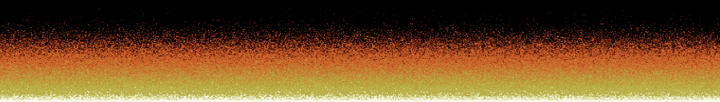

The Game Engine Black Book: DOOM features a whole chapter about DOOM console ports and the challenges they encountered. The utter failure of the 3DO, the difficulties of the Saturn due to its affine texture mapping, and the amazing "reverse-engineering-from- scratch" by Randy Linden on Super Nintendo all have rich stories to tell.
Once heading towards disaster[1], the Playstation 1 (PSX) devteam managed to rectify course to produce a critically and commercially acclaimed conversion. Final DOOM was the most faithful port when compared to the PC version. The alpha blended colored sectors not only improved visual quality, they also made gameplay better by indicating the required key color. Sound was also improved via reverberation effects taking advantage of the PSX's Audio Processing Unit.
The devteam did such a good job that they found themselves with a few extra CPU cycles they decided to use to generate animated fire both during both the intro and the gameplay. Mesmerized, I tried to find out how it was done. After an initial calling found no answer, I was about to dust off my MIPS book to rip open the PSX executable when Samuel Villarreal replied on Twitter to tell me he had already reverse-engineered the Nintendo 64 version[2]. I only had to clean, simplify, and optimize it a little bit.
It was interesting to re-discover this classic demoscene effect; the underlying idea is similar to the first water ripple many developers implemented as a programming kata in the 90's. The fire effect is a vibrant testimony to a time when judiciously picked palette colors combined with a simple trick were the only way to get things done.
At its core, the fire effect relies on a simple array (a.k.a framebuffer) covering the whole screen. Each value in the framebuffer is within [0, 36]. These values are associated with a palette where colors range from white to black, using yellow, orange, and red along the way. The idea is to model the fire particle's temperature as it elevates and cools down.
The framebuffer is initialized full black (with zeros) with a single line of white pixels at the bottom (36) which will be the "source" of the fire.
The array is draw on screen such that the top-left pixel is at array index zero and the bottom-right pixel is at index FIRE_HEIGHT * FIRE_WIDTH - 1. In other worlds, screen-space origin is at the top-left corner.
For each pixel, the "heat" is propagated to the pixel directly above.
function doFire() { for(x = 0 ; x < FIRE_WIDTH; x++) { for (y = 1; y < FIRE_HEIGHT ; y++) { spreadFire(y * FIRE_WIDTH + x); } } } function spreadFire(from) { var to = from - FIRE_WIDTH; firePixels[to] = firePixels[from] - 1; }
Notice that the bottom screen line is never updated. This line, populated with zeros, is the constant "generator" of fire. This simple version with linear cooling (-=1) yields a boring uniform output.
We can tweak the spreadFire() function a little bit and change how fast a heat points decays. Adding randomness works well.
function spreadFire(from) { var rand = Math.round(Math.random() * 3.0) & 3; var to = from - FIRE_WIDTH; firePixels[to] = firePixels[from] - (rand & 1); }

That's better. To improve the illusion further, the heat can be randomly propagated to go not only above but also left and right.
function spreadFire(from) { var rand = Math.round(Math.random() * 3.0) & 3; var to = from - FIRE_WITH - rand + 1 ; firePixels[to] = firePixels[from] - (rand & 1); }
Et voila! Notice that by adjusting how the fire propagates up, wind can also be simulated. I will leave that as an exercise for the readers who had the courage to read up to here.
| ^ | [1] | The full story is detailed in Game Engine Black Book: DOOM |
| ^ | [2] | Twitter post, March 25th 2018 |
{kind=link}